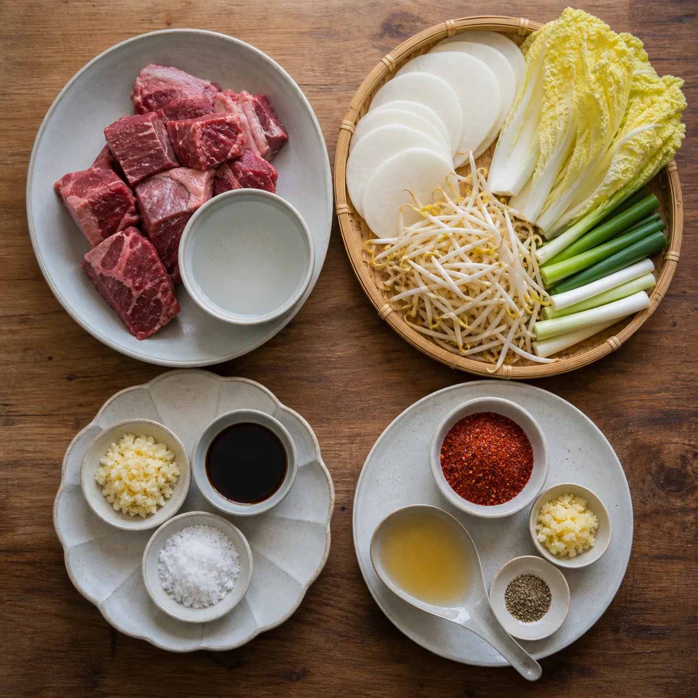
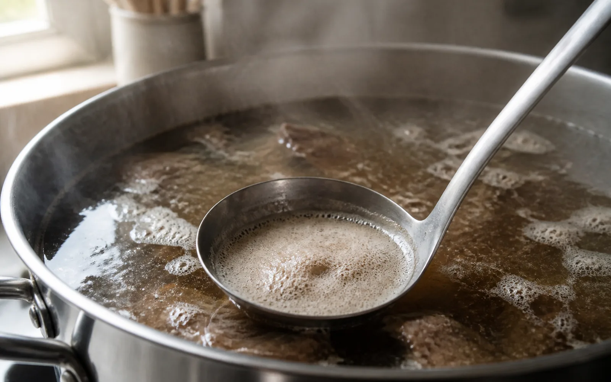
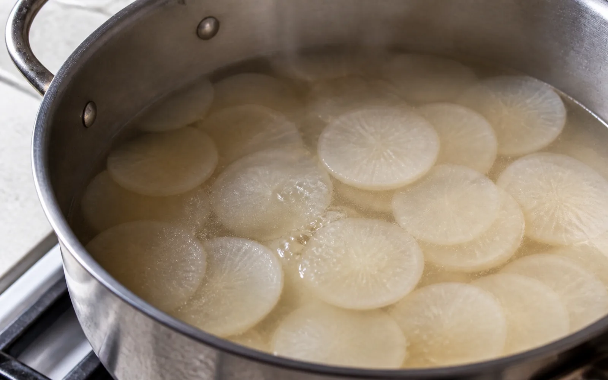
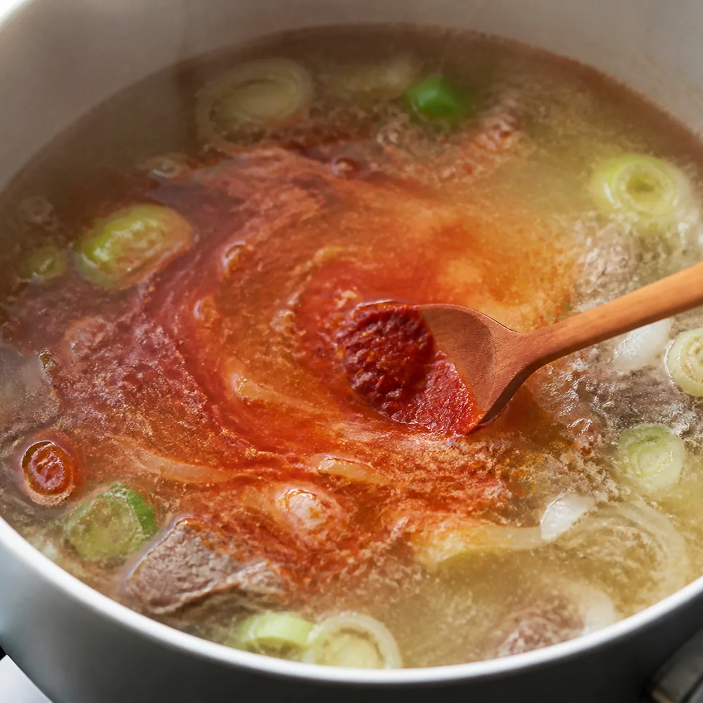

AT HOME
왜 이 레시피인가
돌아와서도 그 국물이 생각나는 날이 있다.
사골을 열다섯 시간 끓일 수는 없다. 그래서 국거리 소고기만으로, 두어 시간 안에 끝나는 버전을 만들었다. 똑같지는 않다. 그런데 비슷한 방향으로는 간다.
글과 레시피 안성마춤 웹진 편집부 · 사진 안성마춤 웹진 편집부
안성에서 국밥을 먹고 온 다음 주에 집에서 두 번 끓였다.
첫 번째는 실패했다. 무를 넣는 타이밍을 놓쳤다. 배추와 함께 한꺼번에 넣었더니 무가 덜 익은 채로 남았고, 국물에 단맛이 안 올라왔다. “재료가 같아도 순서 틀리면 다른 국이 나온다”는 말이 그제야 이해됐다.
두 번째는 순서를 지켰다. 무를 먼저, 몇 분 뒤에 배추, 콩나물은 맨 마지막. 그러자 국물에 단맛이 먼저 깔리고, 배추는 무르지 않은 채 남았다.
열다섯 시간을 두어 시간으로 줄인 국물이 같을 리는 없다. 다만 이 레시피의 목표는 재현이 아니다. 그날의 온도를 집에서 한 번 더 만나는 것, 그 정도다.
INGREDIENTS
재료 · 2인분
- 육수와 고기
소고기 국거리 250g · 물 1.4L
- 채소
무 150g · 배추 160g · 콩나물 120g · 대파 1대
- 기본 간
다진 마늘 1큰술 · 국간장 1큰술 · 소금 적당량
- 다대기
고춧가루 1.5큰술 · 국간장 1큰술 · 다진 마늘 1작은술 · 따뜻한 육수 1큰술 · 후추 약간

METHOD
이렇게 만들어요
- 도마소고기는 키친타월로 표면 물기를 닦는다. 무는 3mm 나박썰기, 배추는 한입 크기, 대파는 어슷썰기.
- 냄비소고기와 물을 넣고 센 불. 끓기 시작하면 거품을 걷고 약한 불로 낮춰 고기가 부드러워질 때까지.

- 냄비고기를 건져 한입 크기로 정리. 냄비에 무를 먼저 넣고 가장자리가 투명해지면 배추와 고기를 다시 넣는다.

- 냄비콩나물과 대파를 더하고 국간장으로 기본 간. 콩나물을 넣은 뒤에는 뚜껑을 자주 여닫지 않는다.
- 볼다대기 재료를 섞는다. 따뜻한 육수 1큰술을 넣어야 덩어리가 풀린다.
- 냄비다대기는 절반만 먼저 푼다. 색과 매운맛을 본 뒤 나머지를 나눠 넣고, 마지막 간은 소금으로.

- 그릇밥은 따로 담는다. 국물을 먼저 맛본 뒤 조금씩 말아야 두 가지 맛을 다 가져간다.